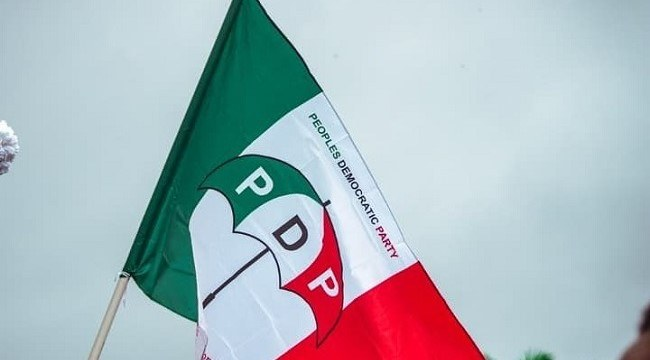

PDP Chairmen Allege Escalating Political Violence, Opposition Intimidation In Ebonyi

The Forum of Peoples Democratic Party (PDP) State Chairmen has called for investigations into alleged political violence and intimidation of opposition members in Ebonyi State. In a statement issued by its chairman, Imo State PDP chairman Austin Nwachukwu, the forum cited reported threats, abductions, killings, unlawful detentions and property destruction. It said the incidents and restrictions on PDP activity spanned mid-2026 and urged authorities to act ahead of the 2027 general elections.
The forum asked the Inspector-General of Police to establish an impartial panel to investigate reported attacks, threats, abductions, killings, armed robbery and property damage. It also called on the Department of State Services to conduct a comprehensive security assessment and urged President Bola Tinubu to ensure impartial security measures and equal protection for citizens regardless of political affiliation. The group asked Governor Francis Nwifuru, the police, the DSS and the Office of the National Security Adviser to intervene.
The chairmen also called on the United Nations, African Union, ECOWAS, diplomatic missions and international human rights organisations to monitor human rights and democratic freedoms in the state. They said PDP gatherings had allegedly faced bans and restrictions while rival political groups were allowed to use public spaces. The forum described the police response to opposition complaints as unsatisfactory and raised ethical concerns about reported accommodation arrangements between the state Commissioner of Police and ReMeritona Hotel in Abakaliki, which it said is allegedly owned by the governor. It said the arrangement did not establish bias but called for clarification to protect confidence in police neutrality.
The forum urged Nwifuru to reject political violence, clarify reported statements against the opposition, explain the legal basis for sealing party assets and cooperate with independent investigators. It said anyone found responsible for wrongdoing on credible evidence should face the law, regardless of political status. The statement also encouraged PDP governorship candidate Ifeanyi Chukwuma Odii and his supporters to remain peaceful as they prepare for the 2027 elections.
In response, Ebonyi State Police Command rejected claims of political bias or compromise. Police spokesperson SP Joshua Ukandu said that, under Commissioner of Police Hope Okafor, the command remained politically neutral and responded promptly and professionally to security threats.
Source: Channels TV